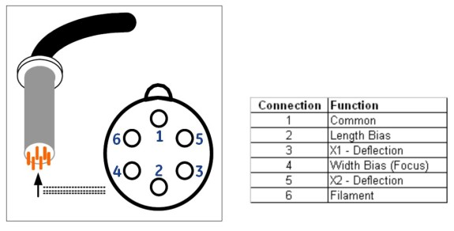

Operating Documentation
Direction 5307452-8EN, Rev# 4
Discovery CT750 HD Service Methods - Adv
Operating Documentation |
| Last Revised: | 15 August 2008 |
The JEDI-SC HV generator interfaces with the X-Ray tube using a HV-cable which is a part of the X-Ray tube assembly. This oil-filled 6-pin federal style HV-plug is inserted into the HV-tank.
The high voltage cable carries the negative high voltage kV, the filament current, and the cathode electrode voltages directly from the HV tank to the X-ray tube. (See Illustration 1.)
Illustration 1: Bottom View - From Inside HV Tank
